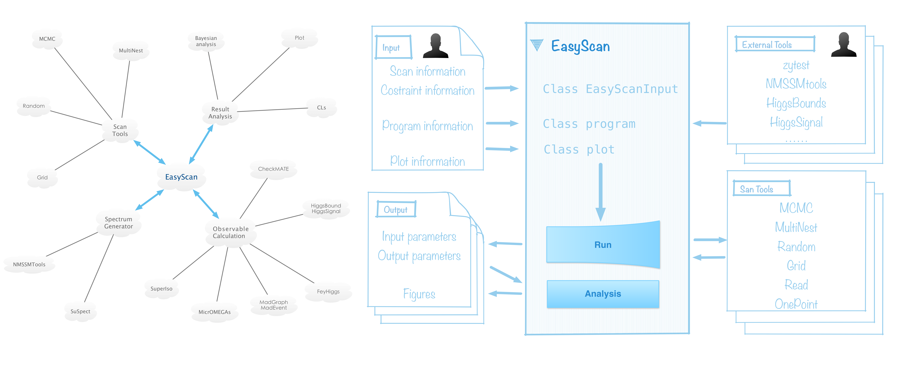

Output folder¶
EasyScan_HEP is an Easy-to-use tool to Scan the parameter space for high energy phyics(HEP) models.
It includes four scan methods(random, grid, MCMC, MultiNest), some popular data analysis algorithm (Bayes anlysis, CLs) and a well defined framwork to connect to high energy physics programs. With only few necessary input parameters(one page), users can easly get visiable results with different scan methods.
